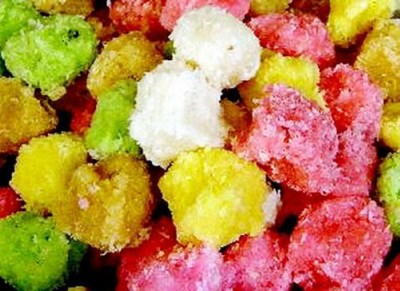

Setiap kamar di desain dengan suasana pedesaan yang sejuk, di lengkapi dengan perlengkapan
tidur yang memanjakan seperti tempat tidur spring-bed, layar flat TV, bebas akses
internet. Ketika membuka jendela, Anda akan melihat pemandangan Gunung Merapi yang
menawan, serta pada sisi lainnya pemandangan kota Yogya dari atas semakin menambah
menarik pemandangan yang di lihat. Semuanya dapat Anda nikmati dari jendela kamar
Anda
Setiap kamar di desain dengan suasana pedesaan yang sejuk, di lengkapi dengan perlengkapan
tidur yang memanjakan seperti tempat tidur spring-bed, layar flat TV, bebas akses
internet. Ketika membuka jendela, Anda akan melihat pemandangan Gunung Merapi yang
menawan, serta pada sisi lainnya pemandangan kota Yogya dari atas semakin menambah
menarik pemandangan yang di lihat. Semuanya dapat Anda nikmati dari jendela kamar
Anda
Footer
Guest House, Kaliurang, Yogyakarta
Guest House setia dalam memanjakan para paengunjung dari breakfest, lunch dan juga
Dinner anda sekeluarga maupun dengan pasangan. Guest House juga mnyediakan berbagai
macam makanan Tradisional atau makanan Khas dari kota Yogyakarta.
Beberapa Makanan Khas Jogja
Footer
Guest House, Kaliurang, Yogyakarta
 Guest house ini memiliki taman luas nan cantik yang memisahkan kamar-kamar di sisi
barat dan timur. Taman ini dihiasi dengan kolam ikan dan 2 gazebo di sisinya. Bila
pagi tiba, Anda dapat menyantap sarapan di bangku-bangku taman sembari menikmati
hangatnya sinar matahari. Saat malam tiba, taman ini tak kalah cantik. Dengan tata
lampu yang apik, siluet cahayanya akan menghiasi taman, menambah romantis malam Anda
di Maharani Guest House. Anda juga bisa mengadakan private party atau barbeque party
di taman ini. Jika ingin berkumpul dengan keluarga atau teman, tersedia pula living
room dan dining room yang luas dengan kursi dan meja kayu khas Jawa di area dekat
lobi. Banyaknya ruang terbuka dan ruang publik yang ada di guest house ini semakin
menambah keakraban tamunya. Bagi Anda yang ingin merasakan keramahan dan keakraban
khas Jawa, Maharani Guest House adalah tempat yang tepat dijadikan pilihan menginap.
Guest house ini memiliki taman luas nan cantik yang memisahkan kamar-kamar di sisi
barat dan timur. Taman ini dihiasi dengan kolam ikan dan 2 gazebo di sisinya. Bila
pagi tiba, Anda dapat menyantap sarapan di bangku-bangku taman sembari menikmati
hangatnya sinar matahari. Saat malam tiba, taman ini tak kalah cantik. Dengan tata
lampu yang apik, siluet cahayanya akan menghiasi taman, menambah romantis malam Anda
di Maharani Guest House. Anda juga bisa mengadakan private party atau barbeque party
di taman ini. Jika ingin berkumpul dengan keluarga atau teman, tersedia pula living
room dan dining room yang luas dengan kursi dan meja kayu khas Jawa di area dekat
lobi. Banyaknya ruang terbuka dan ruang publik yang ada di guest house ini semakin
menambah keakraban tamunya. Bagi Anda yang ingin merasakan keramahan dan keakraban
khas Jawa, Maharani Guest House adalah tempat yang tepat dijadikan pilihan menginap.
Footer
Guest House, Kaliurang, Yogyakarta
Gudeg Yogya Tentu saja, di Yogya Anda harus mencicipi gudeg – sajian ikonik kota
ini. Gudeg adalah masakan dengan bahan nangka muda (disebut gori atau tewel dalam
bahasa Jawa) yang dimasak dengan santan. Pada dasarnya ada dua jenis gudeg, yaitu:
basah dan kering. Setelah dimasak dengan arang selama berjam-jam, nangka muda dan
santan ini sudah siap dimakan. Tetapi, bisa juga “digoreng” lagi dengan tambahan
gula jawa sampai kering dan manis. Gudeg biasanya disiram dengan santan kental yang
juga manis. Ada juga yang menambahkan blondo (ampas minyak kelapa) yang membuatnya
tambah manis dan tambah gurih. Gudeg biasanya didampingi opor ayam, sambal goreng
krecek, tahu/tempe bacem, telur pindang, dan krupuk rambak (krupuk kulit sapi). Beberapa
jenis gudeg basah dicampur dengan daun singkong atau kol hijau. Ada beberapa kawasan
yang menyediakan gudeg di Yogya, yaitu: Wijilan, Kranggan, dan Mangkubumen (dekat
Tugu). Kebanyakan gudeg kering dijajakan pagi hari, sedangkan gudeg basah di malam
hari. Beberapa alamat berikut dapat dicoba: - Gudeg Pawon (Jl. Janturan 36-38, 7002080):
gudegnya disajikan langsung di dapur. Buka mulai tengah malam) - Gudeg Bu Ahmad (Selokan
Mataram UGM, 520049): gagrak gudeg mbarek yang kering dan manis. - Gudeg Yu Djum
(Karangasem Mbarek CT III/22, 515968): juga gagrak gudeg mbarek yang kering dan manis.
- Gudeg Permata Yu Narti (Jl. Gajah Mada, depan Bioskop Permata, 553853): gagrak
gudeg basah dengan lauk pauk yang juga bernuansa basah. Buka malam hari. - Gudeg
Bu Yani (Jl. KHA Dahlan 143, 0813 28040576): gudeg basah yang tidak terlalu manis.
Buka malam. - Gudeg Geneng (Desa Sewon, Bantul, belakang Kampus ISI: juga menyajikan
masakan langsung dari dapur. Tempat ini sebetulnya lebih terkenal untuk mangut lele
khas Yogya. - Gudeg Manggar Halima (Jl. Tunjung Baru 76, Baciro, 9355758): jenis
gudeg yang sangat khas, dibuat dari manggar (bunga kelapa) dengan citarasa gurih
yang menonjol. - Gudeg Manggar Bu Dullah (dekat makam bupati, Bantul, 72020): special
untuk pesanan dan oleh-oleh.
Footer
Guest House, Kaliurang, Yogyakarta

Geplak, tak pelak lagi merupakan salah satu makanan khas Jogja. Mulanya dikenal
sebagai jajanan khas Bantul, geplak kini juga menjadi salah satu trade mark Jogja.
Sejarah geplak, kata salah seorang pembuat dan sekaligus juragan geplak Bantul, Fauzan
Jafar, tidak terlepas dari keberadaan Bantul pada masa lalu sebagai penghasil gula
dan buah kelapa. Pada masa kolonial Belanda, demikian seperti ditulis pemilik blog
emshol.multiply.com, Bantul terkenal sebagai penghasil gula tebu. Tidak tanggung-tanggung,
tercatat ada enam buah pabrik gula pada masa itu. Tanah-tanah pertanian ditanami
tebu. Selain penghasil gula tebu, Bantul, yang letak geografisnya di pesisir selatan,
juga penghasil buah kelapa, dan tentu saja sekaligus penghasil gula kelapa. Produksi
kelapa dan gula yang melimpah inilah yang melahirkan geplak. Makanan ini bisa membuat
gula dan kelapa punya nilai tambah. Bahan utama geplak adalah kelapa. Kelapa ini
diparut lalu dicampur dengan gula. Gula yang dipakai bisa gula kelapa, bisa gula
tebu. Campuran ini lalu dibentuk menjadi bola-bola yang kemudian disangrai. Hanya
begitu prosesnya. Sederhana sekali. Jika gula tebu yang dipakai, hasil akhirnya berupa
geplak berwarna putih kelabu. Jika gula kelapa yang dipakai, geplaknya berwarna cokelat.
Rasanya tentu saja campuran antara gurih kelapa dan manis gula yang sangat legit.
Yah, namanya juga gula. Begitu manisnya sampai bisa membuat kita haus setelah makan
satu biji. Bahkan, mungkin saja kita tidak berselera menghabiskan satu biji karena
saking manisnya. Setelah makan geplak, makanan atau minuman lain yang rasanya manis
menjadi tawar karena kalah oleh rasa manis geplak. Teh manis pun akan terasa seperti
teh tawar. Pada masa lalu, masih kata Fauzan, geplak juga kadang berfungsi sebagai
makanan alternatif pengganti. Pada saat paceklik, warga biasa mengonsumsi geplak
sebagai makanan pokok. Kini, geplak lebih dikenal sebagai makanan kecil sekaligus
oleh-oleh khas Bantul dan Jogja. - See more at: http://jogjanews.com/antara-geplak-bantul-dan-betawi#sthash.iPdb3DvF.dpuf
Footer
Guest House, Kaliurang, Yogyakarta
 Bakpia merupakan salah satu makanan khas kota Jogja. Berbagai rasa yang ada seperti
rasa kacang, coklat, keju, dan lain sebagainya menjadikan lidah Anda di manjakan
dengannya. Bakpia adalah makanan yang terbuat dari campuran kacang hijau dengan gula,
yang dibungkus dengan tepung, lalu dipanggang. Istilah bakpia sendiri adalah berasal
dari dialek Hokkian (Hanzi: 肉餅), yaitu dari kata "bak" yang berarti daging dan "pia"
yang berarti kue, yang secara harfiah berarti roti berisikan daging. Di beberapa
daerah di Indonesia, makanan yang terasa legit ini dikenal dengan nama pia atau kue
pia.[1] Bakpia termasuk salah satu masakan yang populer dari keluarga Cina atau Tionghoa.
Bakpia yang cukup dikenal salah satunya berasal dari daerah Pathok (Pathuk), Yogyakarta.
Mengingat masyarakat Jogja cukup banyak yang beragama Islam, pada perkembangannya,
isi bakpia yang semula daging babi pun diubah menjadi kacang hijau. Kemudian rasa-rasa
dari bakpia dikembangkan menjadi cokelat, keju, kumbu hijau, dan kumbu hitam. Di
desa Pathok, dulunya penduduk tidak mengenal istilah "merek", sehingga bakpia yang
dijual hingga saat ini berlabel "nomor rumah produsen", misalnya nomor 75. Lalu muncul
beberapa merek bakpia yang bukan dari nomor rumah, seperti Djava dan lain-lain. Lezatnya
rasa bakpia menjadikan kue ini menjadi salah satu favorit para wisatawan yang berkunjung
ke Jogja. Bakpia bisa didapatkan di toko bakpia atau toko yang menjual oleh-oleh
khas Yogyakarta. Ada lebih dari 100 merek bakpia. Bakpia yang paling terkenal adalah
Bakpia Kurniasari, Bakpia 145, Bakpia 75, Bakpia 25, Bakpia Merlino, Bakpia Djava,
Snack It Pia 100 (biasanya dijual di Alfamart) dan Bakpia Kencana. Masing-masing
merek memiliki ciri khas yang unik.
Bakpia merupakan salah satu makanan khas kota Jogja. Berbagai rasa yang ada seperti
rasa kacang, coklat, keju, dan lain sebagainya menjadikan lidah Anda di manjakan
dengannya. Bakpia adalah makanan yang terbuat dari campuran kacang hijau dengan gula,
yang dibungkus dengan tepung, lalu dipanggang. Istilah bakpia sendiri adalah berasal
dari dialek Hokkian (Hanzi: 肉餅), yaitu dari kata "bak" yang berarti daging dan "pia"
yang berarti kue, yang secara harfiah berarti roti berisikan daging. Di beberapa
daerah di Indonesia, makanan yang terasa legit ini dikenal dengan nama pia atau kue
pia.[1] Bakpia termasuk salah satu masakan yang populer dari keluarga Cina atau Tionghoa.
Bakpia yang cukup dikenal salah satunya berasal dari daerah Pathok (Pathuk), Yogyakarta.
Mengingat masyarakat Jogja cukup banyak yang beragama Islam, pada perkembangannya,
isi bakpia yang semula daging babi pun diubah menjadi kacang hijau. Kemudian rasa-rasa
dari bakpia dikembangkan menjadi cokelat, keju, kumbu hijau, dan kumbu hitam. Di
desa Pathok, dulunya penduduk tidak mengenal istilah "merek", sehingga bakpia yang
dijual hingga saat ini berlabel "nomor rumah produsen", misalnya nomor 75. Lalu muncul
beberapa merek bakpia yang bukan dari nomor rumah, seperti Djava dan lain-lain. Lezatnya
rasa bakpia menjadikan kue ini menjadi salah satu favorit para wisatawan yang berkunjung
ke Jogja. Bakpia bisa didapatkan di toko bakpia atau toko yang menjual oleh-oleh
khas Yogyakarta. Ada lebih dari 100 merek bakpia. Bakpia yang paling terkenal adalah
Bakpia Kurniasari, Bakpia 145, Bakpia 75, Bakpia 25, Bakpia Merlino, Bakpia Djava,
Snack It Pia 100 (biasanya dijual di Alfamart) dan Bakpia Kencana. Masing-masing
merek memiliki ciri khas yang unik.
Footer
Guest House, Kaliurang, Yogyakarta